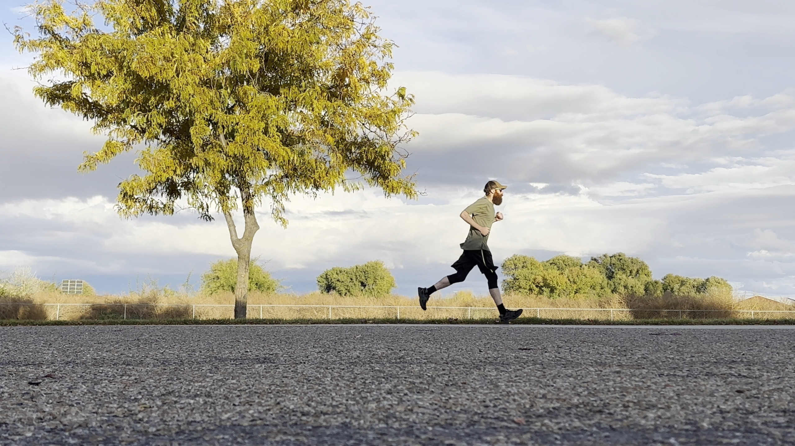
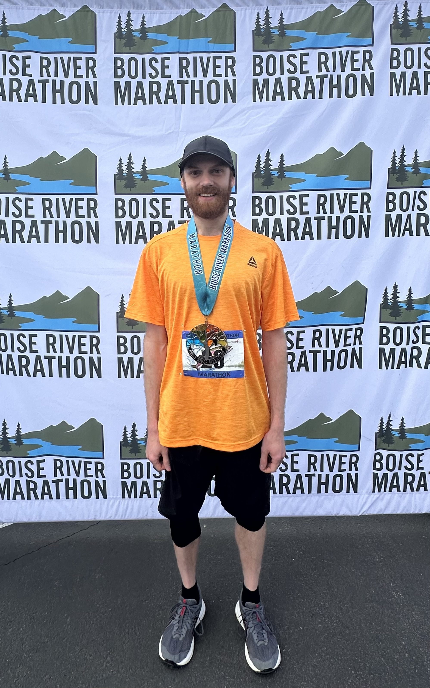
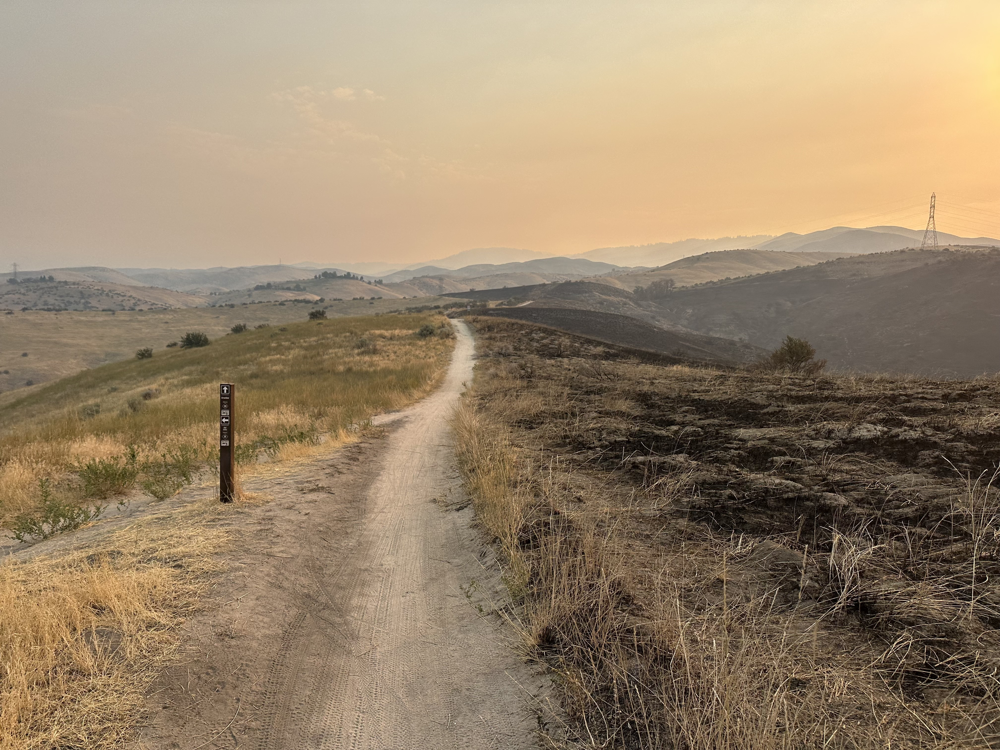
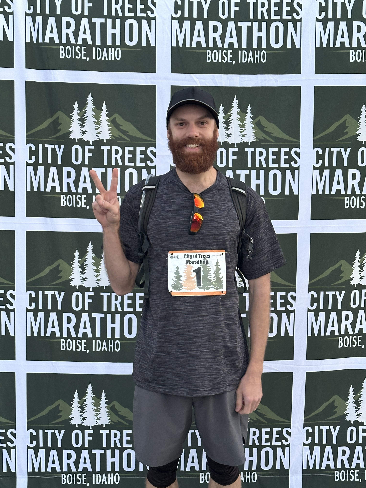
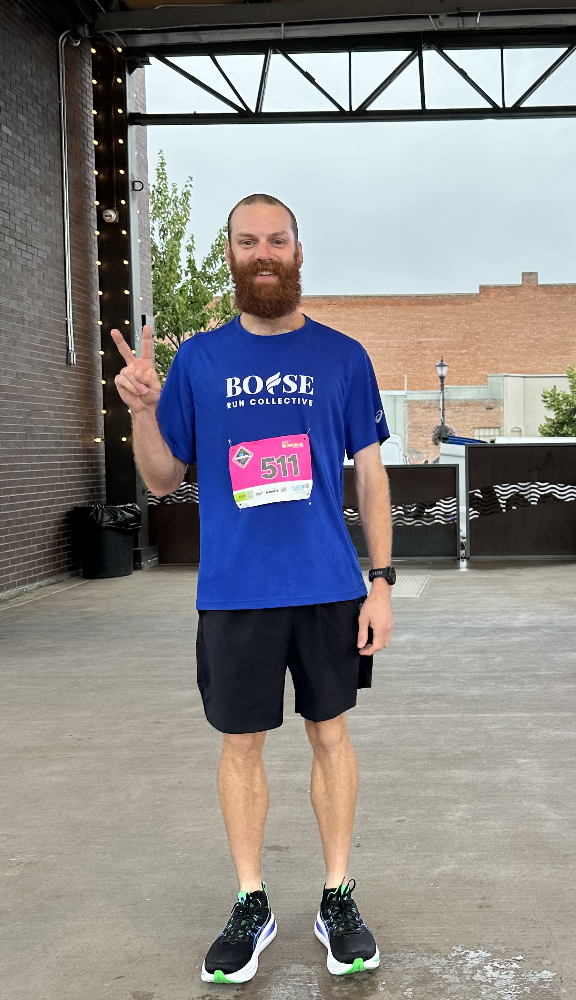

A retrospective
100.
WEEKS OF RUNNING
Sep 15, 2024 — Aug 23, 2026.
The report
I started running in the fall of 2024 with the goal of being able to run a 10k everyday. Now, 100 weeks later, I've run a 10k everyday for the last 166 days (and counting).
I ran 2 marathons in 2025: The Boise River Marathon and The City of Trees Marathon. I've got a total of 5 races planned for 2026: a 5K, a 10K, a half marathon, and 2 full marathons (Idaho Running Day and City of Trees). In 2027, I'm going to start running ultras. My first ultra is going to be the Wilson Creek Frozen 50K in January 2027 (It's gonna be cold!!).
The numbers
Miles logged per training week, all 100 weeks.
Hours logged per training week, all 100 weeks.
Milestones
dates worth remembering
Chapter by chapter
I’ve been running consistently for nearly 2 years now. A lot has changed over that time, but some things have remained the same. I’ve been increasing my volume and intensity gradually over this time, and I’m finally incorporating more track workouts into my weekly running plans. My usual run is a sub-1-hour 10k.

Chapter 1 · Sep–Dec 2024
The first few months of running were very challenging and very rewarding. I saw a lot of progress in the early weeks, but it came with a lot of soreness. I didn't run for 2 weeks in December of 2024 due to working a lot of overtime and starting to feel burnt-out. After deciding to prioritize running and improve my time management skills, I've been running every week since.
Chapter 2 · Jan–Apr 2025
My pace picked up noticeably at the start of 2025 as I trained for the Boise River Marathon. Up to this point, all of my running has been on concrete in the suburbs of Caldwell, Idaho. I wanted to start going to the track more (and join some run clubs), but it was a lot easier to just run at home around my neighborhood. During this phase of my training, I was just trying to build up my aerobic base. I was running at a pace that I could repeat each day without getting overly-tired.
Chapter 3 · May 3, 2025
I made a big mistake on the course, and missed 4 miles of the course! There was a spot near the 16 mile marker where I was supposed to make a turn and go 2 miles before returning and continuing on. I knew something was up when the mile markers suddenly jumped into the 20's, but it was too late to do anything at that point. I finished the race, but I was quite bummed as I finished. I learned the importance of studying the course map before the race. I had expected the course to be thoroughly marked, but there were several spots where I wasn't sure which fork to take.

Chapter 4 · May–Oct 2025
There's a running group called "Boise Area Runners" (BAR) that has runs posted for nearly every day of the week. Additionally, there are a dozen or so other running groups in the greater Boise area. I had been wanting to join some running groups for a while, but I used the excuse of "lack of time" for not going to the group runs. I finally started making it out to the Wednesday and Sunday group runs with BAR, and it was a lot of fun. It was great meeting more people that were into running, and it was awesome to have people to talk to during the runs.

Chapter 5 · Oct 11, 2025
This time I ran the full marathon! I completed the entire 26.2 miles in less time than it took me to complete the 22.2 miles of the Boise River Marathon. I felt very good during and after the race, but it was definately starting to get hot towards the end. There were several times that I wanted to stop and dunk my head in the river real quick, but I didn't.

Chapter 6 · Oct 2025–May 2026
After running the City of Trees marathon, I started my winter arc of training. It didn't really consist of anything new, I was just trying to be more consistant with my running. I would try to run my 10k everyday, and try to make it to at least one club run each week. As the weeks went by, I kept seeing improvements in my pace and total mileage.
Chapter 7 · Jun–Aug 2026
This summer I've reached several new personal records. There were two weeks that I totaled over 100 miles in the week. I also ran my fastest 5K ever! I ran the Caldwell Classic 5K on June 20, 2026. I completed the 3.13 miles in 19:16 (which comes out to a pace of 6:09 per mile). I finished 4th overall, but I got 1st for my age group (30-39).

Looking ahead
I've got four more races lined up for this year: Great Futures 10K (August), Fit One Half Marathon (September), Idaho Running Day Marathon (October), and City of Trees Marathon (October). Additionally, I'm running my first ultramarathon next year: the Wilson Creek Frozen 50K (January). I'm going to start an 8 week training block in November that will heavily include trail/hill workouts and high-mileage weeks. Until then, I plan on keeping my weekly mileage at 60 with more track/speed workouts to get me ready for the road marathons.